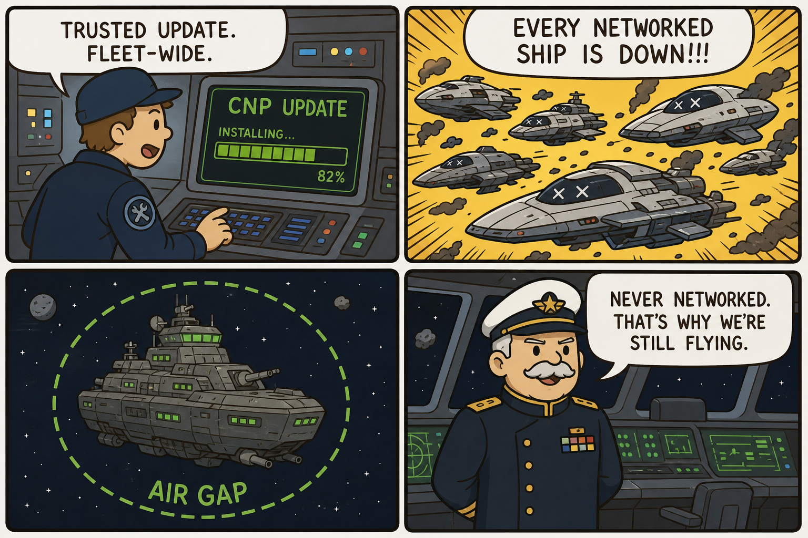
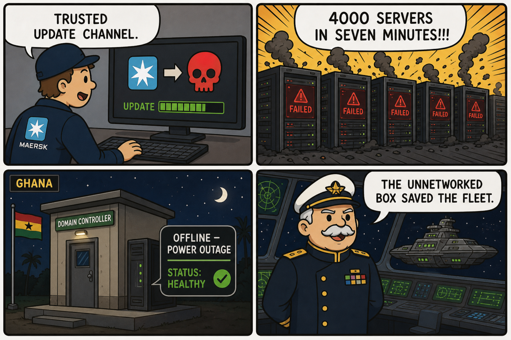

Module 06 / Maritime & Defense Systems Battlestar Galactica (2004) — Miniseries / "33"
IT/OT convergence risk versus intentional air-gapping, and a backdoor delivered through a trusted software update.
The Script — Cinematic Anchor
Dialogue Extract
Scene Visual — Comic Strip

Dramatis Personae → OT Mapping
- Admiral William Adama→Fleet Commander / CISO-equivalent — the standing advocate for keeping one system deliberately air-gapped
- Dr. Gaius Baltar→Unwitting Insider — trusted access exploited to introduce the backdoor
- Colonial Fleet CNP→Networked fleet-wide management platform — an OT/enterprise convergence layer
- Galactica (legacy battlestar)→Isolated legacy asset — the real-world analog of an offline domain controller
Diegetic Failure Mode
A backdoor distributed fleet-wide through a trusted software update channel is remotely activated, disabling almost every modern, networked ship's systems at once. The single asset spared is the one that was never connected to the network the update traveled through — an outcome the fleet did not plan for but that its air-gapped legacy vessel happened to satisfy.
Theoretical ICS Architecture
Purdue Model Impact
Protocols & Control Logic
The show does not name a real protocol; the architecture it depicts — a single trusted update channel with write access into every ship's control system, and no code-signing or version isolation — maps directly onto any modern enterprise patch-management system with a path into operational technology. The core control-logic lesson is that trust in an update's origin is not the same as trust in its content, and that segmentation between distribution infrastructure and operational systems is what limits blast radius when that trust is misplaced.
The Plant — Empirical Grounding
Plant Visual — Comic Strip

Real-World Incident Precedent
The NotPetya attack of June 27, 2017 is an unusually close real-world match. Attackers compromised the auto-update mechanism of a widely used Ukrainian accounting package (M.E.Doc) and used it to distribute self-propagating malware that leveraged stolen credentials and NSA-derived exploits (EternalBlue/EternalRomance) to spread across networks with no further human action required. Global shipping company Maersk lost approximately 4,000 servers and 45,000 PCs across 130 countries within roughly seven minutes of the malware executing. Maersk's full recovery was made possible specifically because one domain controller, in a Ghana office, had been offline during a power outage at the exact moment of infection — preserving an uninfected copy of Active Directory. This is close to a literal real-world instance of "the unnetworked ship survives."
Cinematic vs. Reality Matrix
| Dimension | Media Depiction (The Script) | Industrial Reality (The Plant) |
|---|---|---|
| Failure Vector | A single, deliberately planted backdoor, introduced by a compromised insider and triggered on command. | NotPetya: a nation-state-attributed supply-chain compromise of a trusted accounting software's auto-update mechanism, self-propagating via stolen credentials and an NSA-derived exploit — no per-target human trigger needed. |
| Time to Impact | Fleet-wide simultaneous disablement within the miniseries' opening timeframe — effectively immediate. | Maersk's global infrastructure was destroyed within approximately seven minutes of execution — an unusually close real-world match to the show's near-instant cascading failure. |
| Operator Visibility | Fleet crews have essentially no warning before their ships go dark. | Maersk IT staff observed screens going black simultaneously across offices worldwide with no time to intervene — a documented, striking real-world parallel. |
| Failsafe Behavior | Only the intentionally air-gapped, non-networked Galactica survives combat-capable. | Maersk's recovery hinged entirely on one domain controller that happened to be offline at the moment of infection — a nearly literal analog to the show's central premise. |
Root-Cause Analysis (RCA)
Classification: Network/Cyber (Supply-Chain Compromise)Both cases are supply-chain/update-channel compromises combined with absent segmentation between the distribution channel and operational systems. In both fiction and reality, the deciding factor in survival was pre-existing, deliberate isolation of one asset — not a defense that was actively triggered during the event itself.
Engineering Runbook & Countermeasures
Telemetry Envelope
| Parameter | Normal / Baseline | Condition at Incident |
|---|---|---|
| Fleet combat-ready networked ships | ~100% of networked fleet | Effectively 0% of networked ships combat-capable; 1 non-networked ship unaffected |
| Maersk domain infrastructure availability | Full IT availability | Full domain infrastructure loss within ~7 minutes across affected networks; recovery took roughly 10 days working around the clock from the single surviving domain controller |
Mitigation / Recovery Protocol
- Maintain a deliberately isolated recovery anchor: keep at least one air-gapped or logically isolated redundant asset independent of the primary networked fleet or enterprise — the core lesson in both the fictional and real case.
- Code-signing and independent verification: no software update is trusted into an operational/mission-critical system solely because it arrived via an internal distribution channel.
- Network segmentation: separate update/patch distribution infrastructure from operational control systems per the IEC 62443 zone/conduit model.
- Offline, tested backups of critical directory/configuration data: plan incident response around the assumption of total networked-infrastructure loss.
- Software supply-chain vetting: apply least-trust evaluation to any third-party or centrally-distributed control software before it reaches operational systems.